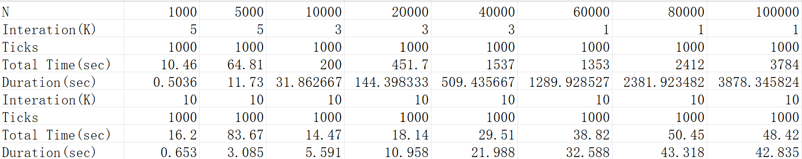
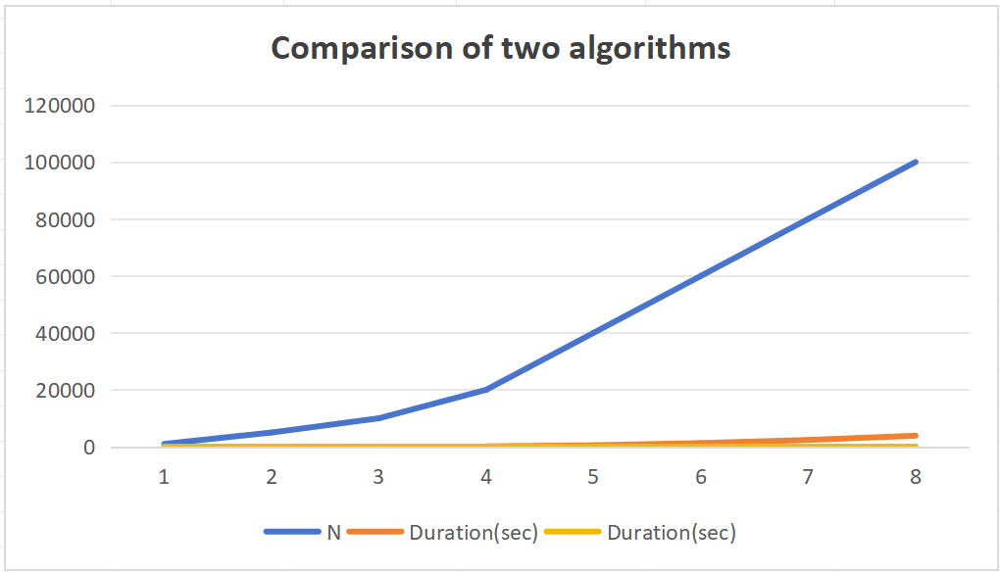

Comparison of two algorithms
Author's Name: Wei Lan Evelina
DATA: 2026-03-11
Chapter1: Introduction
Performance Measurement:
-
Given $S$ as a collection of $N$ positive integers that are no more than $V$. For any given number $c$, you are supposed to find two integers $a$ and $b$ from $S$, so that $a+b=c$.
-
And the following will give two typical algorithms to compare their time conplexity.
Chapter2: Algorithm Specification
- General explanation: the two algotithms adopted
srand()&rand()to gennerate random number to make sure the randomness. Also, they adopt repetition factor to ensure the accuracy.
algorithm 1:
#include<stdio.h>
#include<time.h>
#include<stdlib.h>
clock_t start,stop;
double duration;
int main(){
int s[100000]; //a collection that contain the elements of N
int v;// defining the maximum number
int c;//defining the targeted number
int N;//defining the total number
printf("PLS input maximum,targeted number and total number");
scanf("%d %d %d",&v,&c,&N);//inputing the maximum number & targeted number
srand(time(NULL));
for(int i=1;i<=N;i++){
/*scanf("%d",&s[i-1]);//inputing the elements of s
if (s[i-1]>v){//check if the input number exceeds the boundary
printf("the entered number exceeds the maximum value!!");
return 0;//the version that need to input number by hand
}*/
s[i-1]=rand()%v+1;
}
// the algorithm 1 adopted is two-double traversal method. the following is the main part of the function.
//i&j contain the targeted-position information
int K=100;
for(int m=1;m<=K;m++){//to ensure the accuracy by running the program repeatedly
start=clock();
int number=0; //finding the total targeted number
for(int i=0;i<=N-2;i++){//traverse every posible combinations
for(int j=i+1;j<=N-1;j++){
if(s[i]+s[j]==c){
printf("(%d , %d)\n",s[i],s[j]);//outputing the targeted number
}
}
}
stop=clock();
duration+=((double)(stop-start)/CLK_TCK);//number of ticks per second.
}
printf("the running time is %f",duration/K);
}
- This one adopts two-double traversal method. We need to traverse all the posible situation by two-double circulation.Because of its loop structure, the time complexity reaches $O(N^2)$.
Algorithm 2:
#include<stdio.h>
#include<time.h>
#include<stdlib.h>
clock_t start,stop;
double duration;
int main(){
int s[100000]; //a collection that contain the elements of N
int hash[100000]={0};
int v;// defining the maximum number
int c;//defining the targeted number
int N;//defining the total number
printf("PLS input maximum,targeted number and total number");
scanf("%d %d %d",&v,&c,&N);//inputing the maximum number & targeted number
srand(time(NULL));
for(int i=1;i<=N;i++){
/*scanf("%d",&s[i-1]);//inputing the elements of s
if (s[i-1]>v){//check if the input number exceeds the boundary
printf("the entered number exceeds the maximum value!!");
return 0;//the version that need to input number by hand
}*/
s[i-1]=rand()%v+1;
}
//the algorithms 2 is based on the hash algorithms
start=clock();
for(int k=0;k<=9;k++)//to ensure the accuracy by running the program repeatedly
for (int i=0;i<N-1;i++){
hash[s[i]]=1;// to mark this number
if(s[i]<c&&hash[c-s[i]]==1){// to find if the targeted number has already appeared.
printf("(%d , %d)\n",s[i],c-s[i]);
}
}
stop=clock();
duration=((double)(stop-start))/CLK_TCK;
printf("%f",duration);
}
-
This algorithm adopts hash algorithm. It can traverse for only one loop and it is the most effective one I have thought.The time complexity is $O(N)$,far above that in algorithm 1.
-
The main strategy of algorithm 2 is to mark the number that has already appeared and check if the targeted number--the one that adds the giving number is $c$ --has already appeared. If it is ,than put it out.
Chapter3:Testing result
Experimental Setup
- To empirically validate the theoretical complexity analysis, both algorithms were tested under identical conditions:
Compiler: devc++ version 5
Input Parameters: N ranging from small to large values, V = 10000, c randomly chosen
Measurement: Each data point represents the average of 100 runs to ensure statistical significance
- the following is the testing result.

- the following is the comparison graph. ps:the bule one is for algorithm 1 and the yellow one is for algorithm 2.

- The result clearly demonstrate the superiority of algorithm 2 for the large input. As the N increases, algorithm2 is increasing linearing .
Charpter 4 : Analysis and Comments
Time and space complexity:
algorithm1:
- ANALYSIS：- The algorithm employs two nested loops to examine all possible unordered pairs of elements
- The outer loop runs from
i = 0toN-2, iterating N-1 times - For each iteration of the outer loop, the inner loop runs from
j = i+1toN-1 -
The total number of comparisons is: $$ (N-1) + (N-2) + ... + 2 + 1 = N(N-1)/2 ≈ N²/2 $$
-
the time complexity is $O(N^2)$ and the space complexity is $O(N)$.
-
It can be completely improved. So I introduce algorithm 2.
algorithm 2:
- ANALYSIS:The main loop runs exactly N times (from
i = 0toN-1) -
Inside the loop, each operation is constant time O(1):
-
$\therefore$ the time complexity is $O(N)$ and the space complexity is $O(V)$.
-
I think this algorithm is almost the most effective one, because you should at least traverse the whole number . And the searching movement has already reached $O(N)$.
-
And I think the future improvement for this algorithm should be focused on the space complexcity.
conclusion
| Aspect | algorithm1 | algorithm 2 |
|---|---|---|
| time efficiency | poor | excellent |
| space efficiency | based on N | based on V |
Declaration
- I hereby declare that all the work done in this project titled "Comparison of two algorithms" is of my independent effort